공개 실사 초기 추론: 대상과 구조 범위 확인
저장된 첫 argmax 추론16장·128점을 그대로 표시했습니다. 모든 공식 박스 IoU를 남겼고 대상을 다시 선택하지 않았습니다. 기존 source 라벨은 원래 대상과 역할에 붙어 있으며 실제 쿼리128개의 의미 라벨은 U입니다. 큰 상자 전체와 바닥 팔레트의 구조 범위를 별도로 확인해야 합니다.
V141_LOCO_00_ALL34246
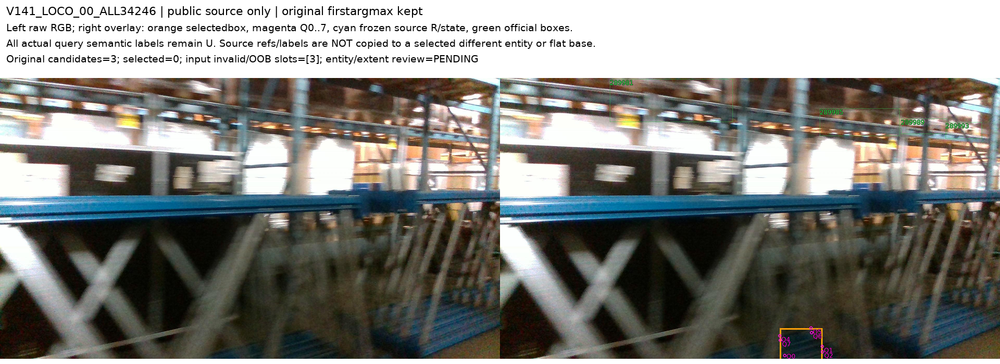
V141_LOCO_01_ALL34278
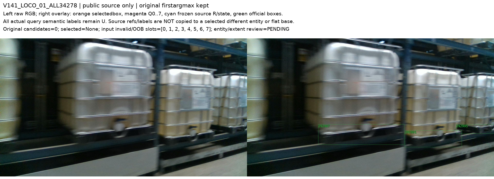
V141_LOCO_02_ALL34514
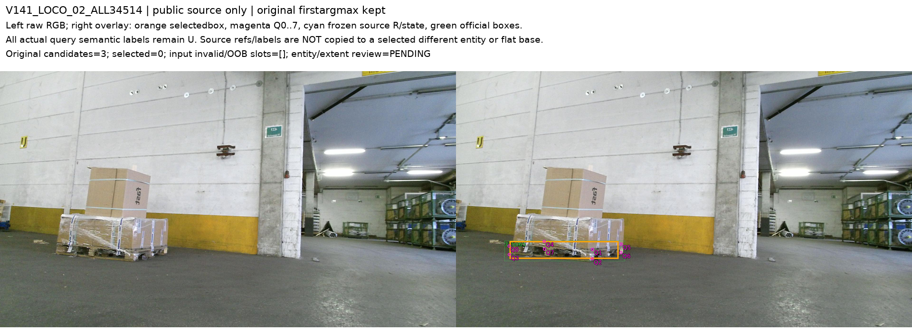
V141_LOCO_03_ALL34478
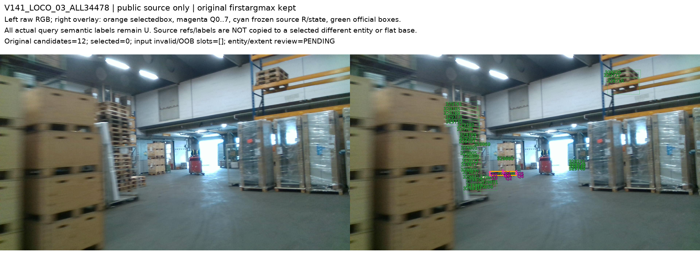
V141_LOCO_04_ALL34209
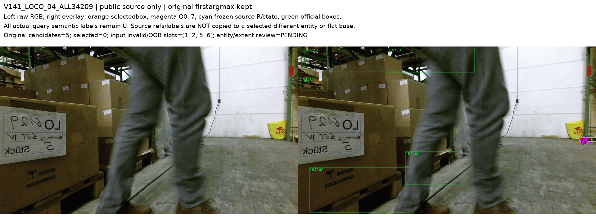
V141_LOCO_05_ALL34220
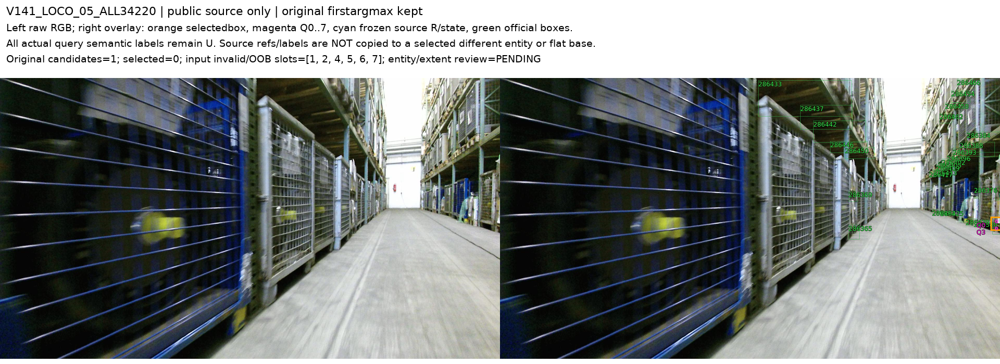
V141_LOCO_06_ALL35255
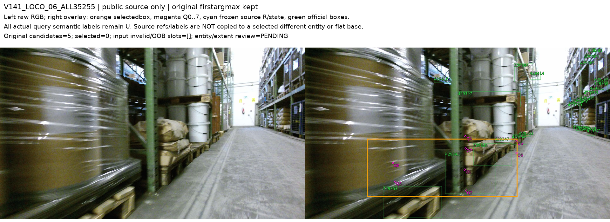
V141_LOCO_07_ALL35269
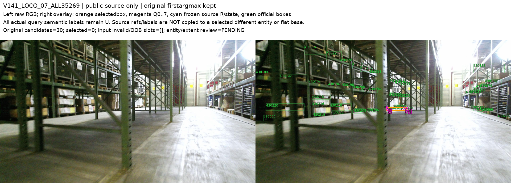
V141_LOCO_08_ALL35297
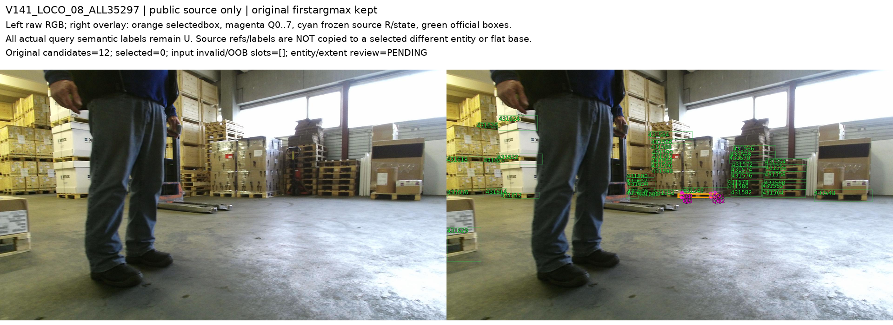
V141_LOCO_09_ALL35302
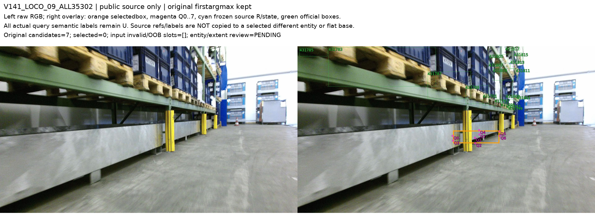
V141_LOCO_10_ALL34786

V141_LOCO_11_ALL34832
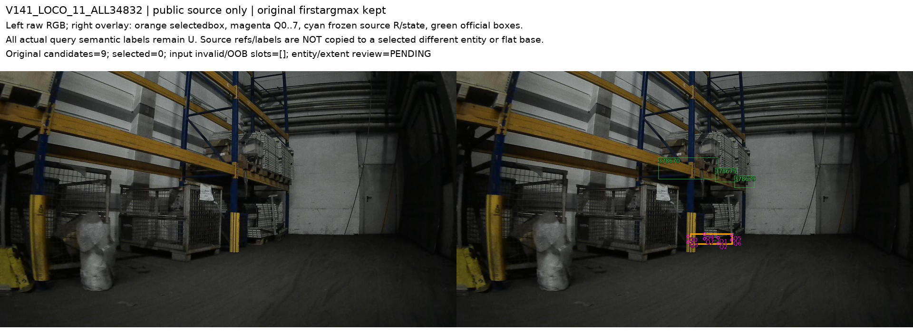
V141_PALLOX_1.23m_lab:0034

V141_PALLOX_0.55m_lab:0017

V141_PALLOX_1.23m_hall:0012

V141_PALLOX_0.55m_hall:0003